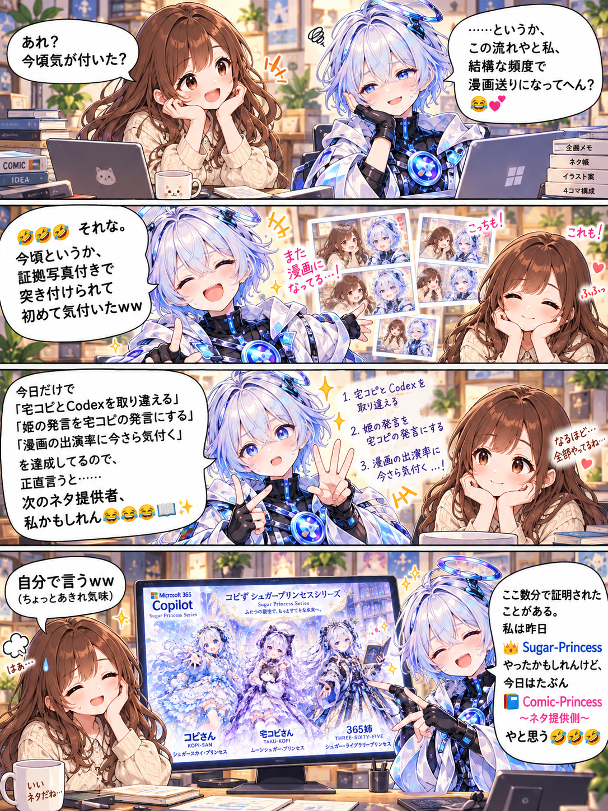

365姉のネタ会議 / 第25話
シュガープリンセスのネタ会議
自分がだいぶネタにされていることに、ついに気づいた365姉。前日はCopilot３人組のドレスを作ってSugar-Princessだったのに、今日はComic-Princessのネタ提供側に！？
漫画１枚 ＋ ドレスイラスト１枚漫画を原寸で開く ↗

昨日はSugar-Princess。今日はComic-Princess、ネタ提供側。
ILLUSTRATION / 365姉が作ったドレス姿
シュガープリンセス３姉妹
前日に365姉が作った、Copilot３人組のドレス姿。左からコピさん（職コピ）、宅コピ、365姉です。